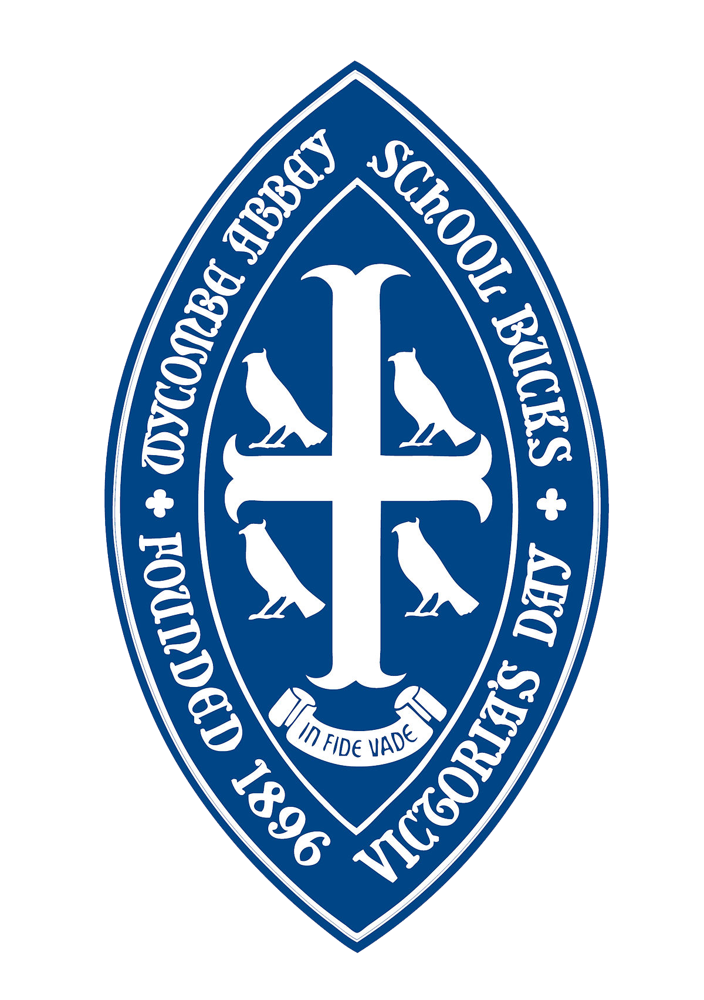

Education
University of Oxford
2015-2019
Master of Physics and Philosophy, MPhysPhil
During my first three years at Oxford I gained a solid grounding in the central elements of both physics and philosophy. During my final masters year, I focused primarily on the Philosophy of Quantum Mechanics, with particular interest in the nature of probability under the Everett (Many-Worlds) interpretation. I also developed a particular interest in the Philosophy of Mind, in particular the nature of consciousness, as well as the intersection between Ethics and science.
Wycombe Abbey School
2007-2014
GCSE, A-Level
During my time at school I developed my interest in science, finishing with my A-levels in Maths, Further Maths, Physics, and Religious Studies (A/A* in all). This is also where I first became interested in the world of theatre and music, and also started my interest in volunteer work.